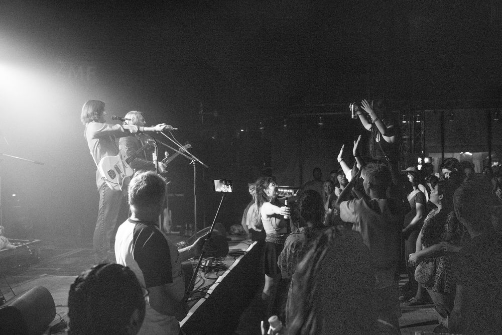

Seven Purple Tigers





Seven Purple Tigers
Konzertfotografie, ZMF Freiburg, 2022
Fotografische Begleitung der Band Seven Purple Tigers bei ihrem Auftritt am Zelt-Musik-Festival in Freiburg. Auf der Bühne, im Publikum und backstage.